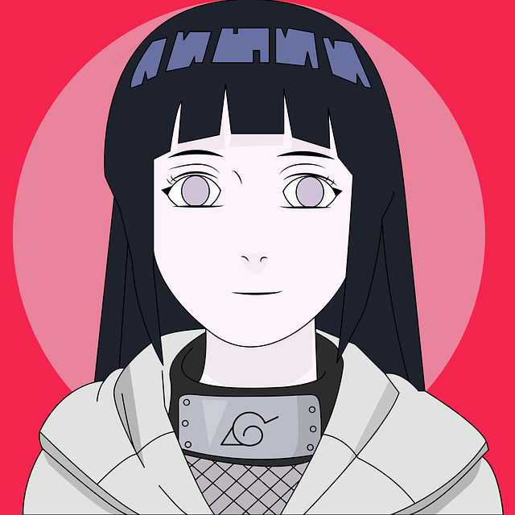

JICCA'S
O objetivo dos JICCA´s - Jogos Internos do Campus Cacoal é aumentar a participação da juventude estudantil do Campus em atividades esportivas, culturais e de lazer, promovendo a integração social, o exercício da cidadania e a descoberta de novos talentos.
Professora: Lilian Catiuscia Eifler Firme da Silva
Jogos de Hoje
Equipes
Modalidade

Descrição do Jogo
Equipes
Modalidade
Imagem
Descrição do Jogo
Noticias
Título Noticia
Imagem
Texto
Título Noticia
Imagem
Texto